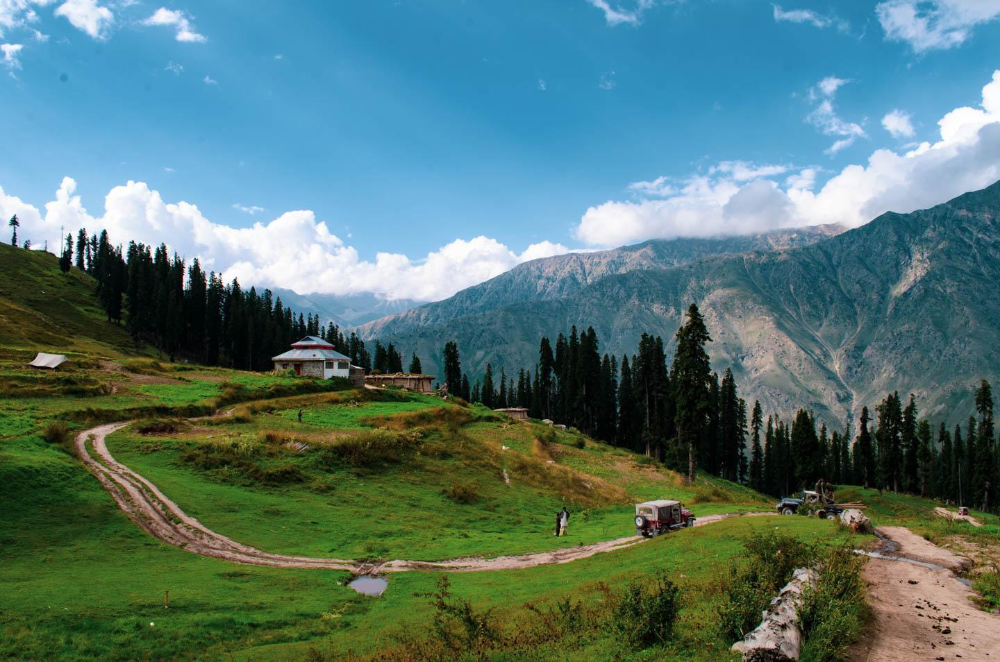

Naran is a town and popular tourist destination in the upper Kaghan Valley in the Mansehra District of the Khyber Pakhtunkhwa province of Pakistan. It is located 119 kilometers (74 mi) from Mansehra city at an altitude of 2,409 meters (7,904 ft). It is located about 65 kilometers (40 mi) away from Babusar Top.It is one of the most popular tourist attractions locally as well as internationally.Naran Valley is also Pakistan's most visited Valley, around 1.5 million people visit Naran Valley every year.
1:Lake SaifulMalook
2:Danna Meadows(Trek)
3:River Kunhar
4:Babusar Top
1:Pine Grove Hotel
2:River View Hotel
3:Rose Valley Hotel
Naran has a humid continental climate (Koppen Climate Classification Dfb),[3] but the weatherbox below suggests a subarctic (Dfc) climate. There is significant rainfall in summers and heavy snowfall in winters. The region is Alpine in geography and climate, with forests and meadows dominating the landscape. The weather usually remains cloudy throughout the year. During the winters the temperature often remains below 0 °C with heavy snowfall. In the summers the temperature rarely exceeds 15 °C with heavy rainfall. Naran remains busy in summer, starting earlier, and tourism is extending up to late in the fall. The average annual temperature in Naran is 4.7 °C.
